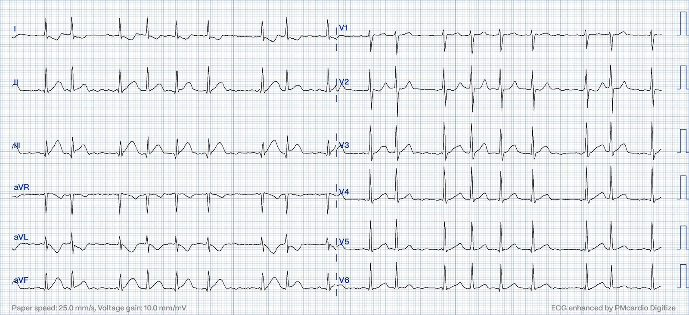
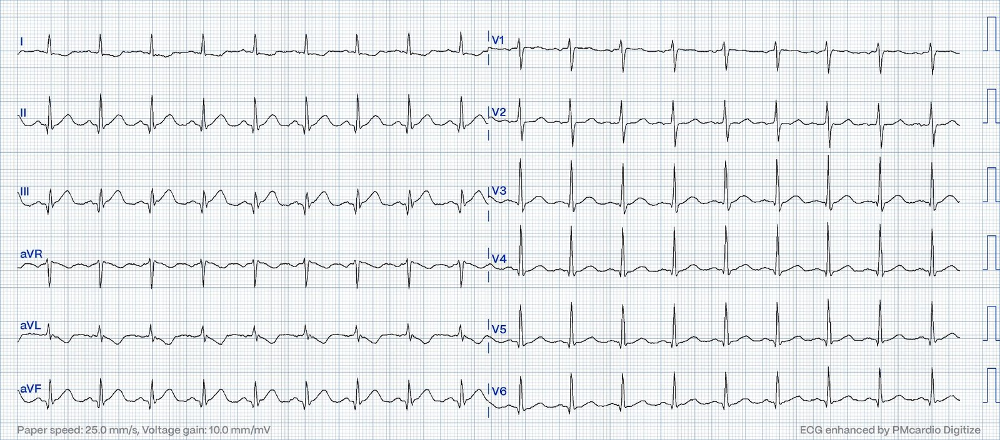
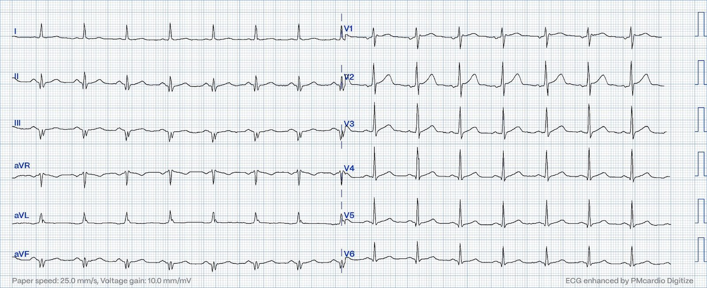
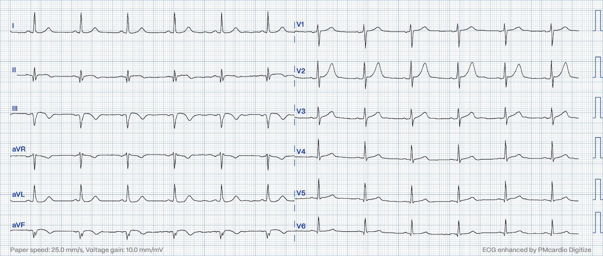
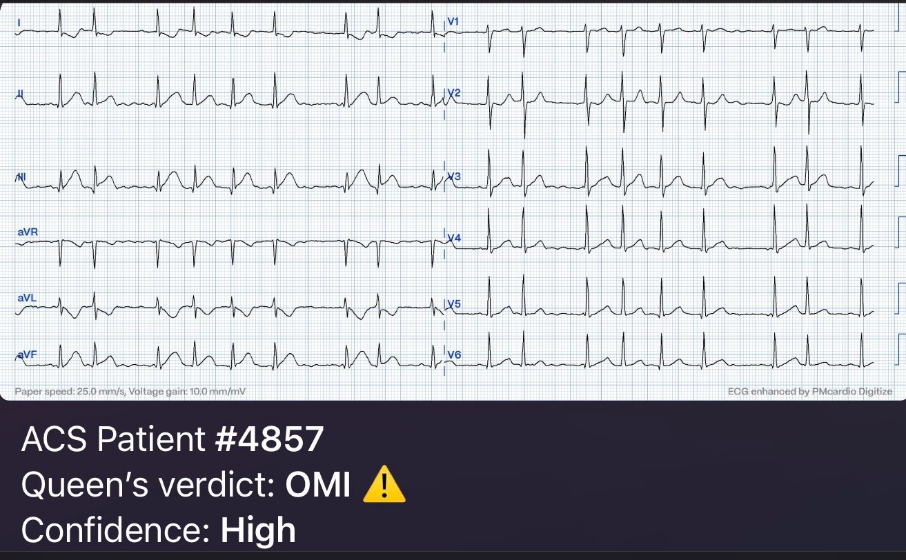
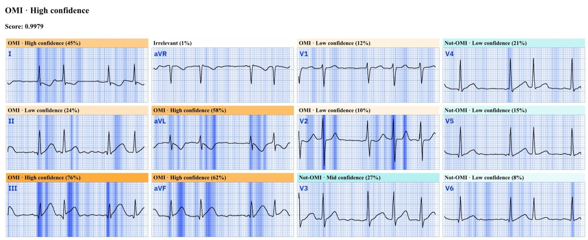
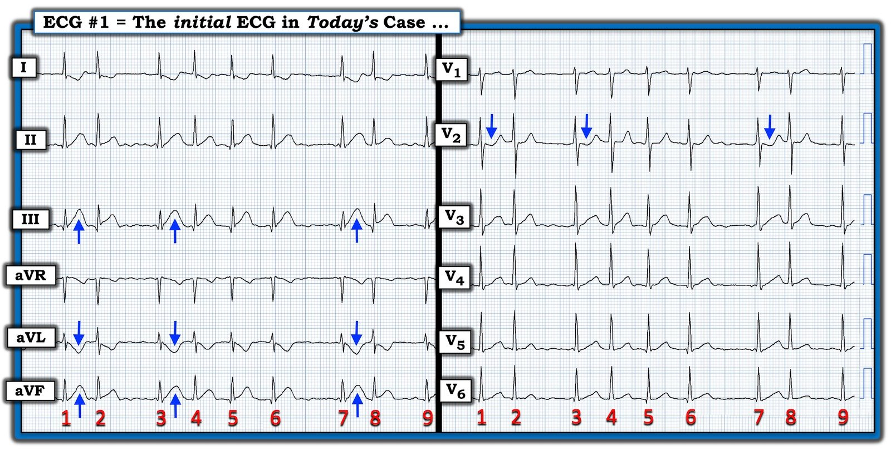

24/09/2023 — Morphine + OMI là một sự kết hợp tồi
Bản dịch tiếng Việt của bài "Morphine + OMI is a bad combination" – Dr. Smith’s ECG Blog. Giữ nguyên toàn bộ 8 hình ảnh của bản gốc.
Bài này do Magnus Nossen viết, có một số chỉnh sửa của Smith
Chẩn đoán điện tâm đồ này sẽ hiển nhiên với đa số độc giả của blog. Nó không hiển nhiên với đa số bác sĩ, thậm chí cả bác sĩ tim mạch.
Một bệnh nhân nam ngoài 50 tuổi đến khoa cấp cứu vì đau ngực điển hình. Cơn đau bắt đầu ngay trong ngày, khoảng hai giờ trước lần tiếp xúc y tế. Tiền sử bệnh đáng chú ý có đái tháo đường típ II. Điện tâm đồ đầu tiên được trình bày dưới đây. Sau khi xem điện tâm đồ, những người chăm sóc y tế cho rằng đau ngực của bệnh nhân là do rung nhĩ mới khởi phát với đáp ứng thất nhanh. Bạn có đồng ý không?


Điện tâm đồ lúc nhập viện đúng là có rung nhĩ. Tôi nghĩ với những người làm y tế chưa quen với các dấu hiệu OMI trên điện tâm đồ, điện tâm đồ này có thể trông khá “bình thường”. Nếu bạn đã quen với mô hình OMI/NOMI thì chẩn đoán là hiển nhiên với bạn và được đưa ra ngay không chút chậm trễ. Tôi đã cho một số đồng nghiệp xem điện tâm đồ này và họ không thể tự tin nói rằng đây là tắc mạch vành cấp.
Quay lại ca bệnh. Troponin I ban đầu trả về tăng ở mức 84 ng/L (giá trị tham chiếu <34 ng/L). Bệnh nhân đã được truyền dịch và cho morphine, và đã tự chuyển về nhịp xoang. Sau đó, khi đã ở nhịp xoang (ngay sau khi dùng morphine), bệnh nhân phủ nhận đau ngực. Điện tâm đồ sau đây được ghi lại.


Các hướng dẫn nói rằng nếu bệnh nhân bị ACS nhưng đau kháng trị thì bệnh nhân cần được đưa cấp cứu tới phòng thông tim (cath lab). Cơn đau của bệnh nhân này quả thật đã hết. Nhưng nó chỉ hết nhờ morphine! Morphine sẽ làm hết mọi cơn đau ngay cả khi bệnh lý vẫn đang tiếp diễn. Đừng cho morphine cho tới khi bạn đã quyết định đưa bệnh nhân lên phòng thông tim.
Quan trọng không kém, điện tâm đồ cho thấy OMI dưới-sau rõ ràng đang diễn ra và đang tiến triển, với sóng T tối cấp ở các chuyển đạo II, III và aVF. Đã bắt đầu hình thành sóng Q ở thành dưới. Thay đổi soi gương (reciprocal) ở chuyển đạo I và aVL với ST chênh xuống và sóng T đảo ngược. OMI vẫn không được nhận ra. Bệnh nhân được nhập viện và theo dõi từ xa (telemetry). Không có thêm cơn rung nhĩ nào trong thời gian theo dõi. Do khó chịu ở ngực, bệnh nhân được dùng lại morphine trong đêm. Ngày hôm sau troponin I trả về 48.131 ng/L. Một nhồi máu cơ tim rất lớn.


Điện tâm đồ ngày hôm sau, không có gì bất ngờ, cho thấy nhồi máu xuyên thành thành dưới và thành sau đã hoàn tất. Giờ đã có sóng Q hình thành rõ ở thành dưới. Tính tối cấp của sóng T đã mất, cho thấy còn rất ít cơ tim có thể cứu vớt. Có vùng chuyển tiếp R/S sớm ngay ở V2 (tương đương sóng Q thành sau). Bệnh nhân, dù rất muộn, đã được chuyển đi chụp mạch vành, nơi một RCA đoạn gần (pRCA) hẹp 99% được đặt stent.


Điện tâm đồ sau PCI được trình bày dưới đây, với sóng T tái tưới máu ở các chuyển đạo dưới và sóng T tái tưới máu thành sau (ảnh hưởng tới kích thước và hình dạng của sóng T ở các chuyển đạo trước, đặc biệt dễ thấy ở chuyển đạo V2).
Siêu âm tim chính thức cho thấy phân suất tống máu thất trái (LVEF) giảm vừa, còn 40%. Rối loạn vận động thành (WMA) ở thành dưới và thành sau. Nhìn chung về mặt lâm sàng (ít nhất là trong ngắn hạn), bệnh nhân này diễn tiến tốt dù điều trị bị chậm trễ. Những người khác không được may mắn như vậy. Việc kích hoạt phòng thông tim muộn lẽ ra đã tránh được nếu các bác sĩ điều trị được đào tạo để nhận ra nhồi máu cơ tim do tắc. Mô hình AI Queen of Hearts (QoH) cũng sẽ giải quyết được vấn đề.
Dưới đây bạn có thể xem kết quả đọc của thuật toán AI. Cũng hãy chú ý con số điểm ở góc trên bên trái. Nó cho giá trị 0,9979. Mô hình AI đưa ra một con số từ 0 đến 1. Càng gần 1, thuật toán càng chắc chắn về chẩn đoán OMI. Ở đây có thể thấy con số rất, rất gần 1. Như vậy thuật toán AI rất chắc chắn có tắc hoàn toàn mạch vành mặc dù có bất kỳ ST chênh lên đáng kể nào [người dịch: nguyên văn ghi “despite there being any significant ST elevation”, nhiều khả năng ý là “mặc dù không có ST chênh lên đáng kể nào”].


Hệ thống điện tâm đồ OMI bằng AI PMCardio Queen of Hearts nay đã có phần giải thích (explainability).
Thiếu khả năng giải thích là một trong những chỉ trích chính đối với AI — nhưng Queen thì có.


Bạn có thể thấy mỗi chuyển đạo được gán nhãn OMI hoặc Not OMI kèm độ tin cậy tương ứng.
Sau đó, trong mỗi chuyển đạo, phần tô màu xanh được dùng để chỉ ra phần của phức bộ trong từng chuyển đạo phù hợp nhất với OMI. Chuyển đạo III và aVF có nhiều màu xanh đậm, và màu xanh đậm đó tập trung trên sóng R, đoạn ST và sóng T (cả 3, vì đây là một OMI hiển nhiên) [người dịch: nguyên văn ghi “OMI0.”, nhiều khả năng là lỗi đánh máy của dấu “)”]. aVL cũng có nhiều màu xanh đậm, chuyển đạo I cũng vậy. V2, nơi thể hiện OMI thành sau, cũng có nhiều màu xanh đậm.
Hãy chú ý rằng phần lớn màu xanh đậm tập trung trên QRS (sóng R); QRS hoàn toàn bị bỏ qua trong mô hình STEMI!!
Mạng nơ-ron cho ra một kết quả dạng số trong khoảng từ 0 đến 1, trong đó 1 tượng trưng cho điểm OMI tuyệt đối, còn 0 tượng trưng cho điểm không-OMI tuyệt đối. Qua phân tích bộ dữ liệu tinh chỉnh, người ta đã xác định ngưỡng OMI tối ưu là 0,1106. Mọi điểm trên ngưỡng này được coi là OMI dương tính, còn các điểm dưới ngưỡng được coi là OMI âm tính (không-OMI).
Để phân loại các dự đoán chi tiết hơn, đoạn OMI dương tính và đoạn OMI âm tính được chia đều thành các tam phân vị độ tin cậy. Nếu đầu ra của mạng nơ-ron cao hơn ngưỡng, điểm càng cao cho thấy độ tin cậy rằng đó là OMI càng lớn. Ngược lại, nếu điểm thấp hơn ngưỡng, độ tin cậy rằng đó là một điện tâm đồ âm tính với OMI (không-OMI) càng cao.
Ví dụ:
– Điểm 0,6743 sẽ là OMI độ tin cậy trung bình (Mid Confidence) vì nó nằm dưới ngưỡng độ tin cậy cao (1-((1-0,1106)/3) = **0,70353**) và trên ngưỡng độ tin cậy thấp (**0,40706**)

===================================
BÌNH LUẬN CỦA TÔI, bởi KEN GRAUER, MD (24/9/2023):
===================================
Tôi thấy ca bệnh hôm nay của bác sĩ Nossen thú vị vì nhiều lý do.
- Tôi tập trung bình luận vào điện tâm đồ ban đầu — mà tôi đã trình bày lại ở Hình 1.


Suy nghĩ về ca bệnh hôm nay:
Đôi khi — một bệnh nhân có thể đến cấp cứu vì CP (đau ngực – Chest Pain) chỉ đơn thuần do một rối loạn nhịp nhanh (bao gồm AFib mới xuất hiện, SVT vào lại hoặc VT). Theo kinh nghiệm của tôi — đau ngực liên quan đến rối loạn nhịp nhanh là một hiện tượng có thật nhưng không thường gặp, trong đó bệnh nhân thấy triệu chứng thuyên giảm ngay lập tức, gần như đúng vào thời điểm rối loạn nhịp nhanh chấm dứt.
- NẾU đau ngực không hết nhanh chóng trong vòng vài khoảnh khắc sau khi nhịp xoang trở lại — thì giả định rằng rối loạn nhịp nhanh là nguyên nhân trực tiếp gây đau ngực ở bệnh nhân đó trở nên mong manh. Điều này càng đúng nếu thời gian kéo dài của rối loạn nhịp nhanh là đáng kể — vì bản thân việc tăng nhu cầu do một rối loạn nhịp nhanh mới xuất hiện cũng có thể gây tổn thương cơ tim.
- Điều còn thiếu trong bệnh sử được kể cho chúng ta là sau khi nhịp xoang trở lại bao lâu thì đau ngực của bệnh nhân mới hết. Chi tiết bệnh sử này có ý nghĩa lâm sàng — vì những người làm y tế trong ca hôm nay đã quy sai đau ngực của bệnh nhân cho AFib mới khởi phát, điều không nên làm nếu có một khoảng trễ giữa lúc hết đau ngực và lúc nhịp xoang trở lại.
Thường có sự e dè trong việc giảm đau ngực cho bệnh nhân bằng morphine — vì sự chậm trễ mà điều này đã được chứng minh là gây ra trong việc sớm đưa bệnh nhân OMI cấp đi thông tim.
- Theo ý kiến của tôi — vấn đề không nằm ở việc cho morphine, mà là ở việc không nhận ra được các thay đổi cấp tính trên điện tâm đồ khi chưa đạt tiêu chuẩn STEMI dựa trên milimét.
- Như bác sĩ Nossen đã nêu — thuật toán AI QoH (Queen of Hearts) đã ngay lập tức nhận ra khả năng cao có OMI cấp từ điện tâm đồ #1. Nhưng dù việc QoH ngày càng được dùng rộng rãi trong thực hành chung sẽ hữu ích đến đâu — Chúng ta cần làm tốt hơn!
- Ở một bệnh nhân đau ngực mới khởi phát — các bất thường ST-T ở 5/6 chuyển đạo chi trên điện tâm đồ #1 cần được nhận ra. Mỗi chuyển đạo dưới đều biểu hiện sóng T tối cấp không tương xứng (cao hơn và “béo” hơn ở đỉnh, cũng như rộng hơn ở chân so với lẽ ra phải có). Với các sóng T này ở chuyển đạo dưới — không có cách nào để sóng ST-T chênh xuống ở các chuyển đạo bên cao I và aVL lại không phải là thay đổi soi gương xác nhận OMI thành dưới cấp. Thêm bằng chứng ủng hộ là các sóng Q nhỏ-nhưng-thật ở mỗi chuyển đạo dưới.
- Cần đánh giá thường quy OMI thành sau bất cứ khi nào nghi ngờ OMI thành dưới cấp. Bình thường — phải có ST chênh lên nhẹ, dốc lên ở các chuyển đạo trước V2 và V3. Vì vậy, đoạn ST dẹt (nếu không nói là dốc xuống) ở chuyển đạo V2 trong bối cảnh này là chẩn đoán OMI thành sau cấp. Thêm gợi ý ủng hộ OMI thành sau là vùng chuyển tiếp ở chuyển đạo ngực tương đối sớm (sóng R cao hơn nhiều so với dự kiến ngay ở chuyển đạo V2).
LƯU Ý: Tôi xin kết thúc bằng việc nêu các điểm sau:
- Điều quan trọng là cần biết rằng cùng 9 nhát bóp được thể hiện ở cả chuyển đạo chi lẫn chuyển đạo ngực. Kiểu hệ thống ghi này cho ra dải nhịp ngắn hơn (chỉ dài 6 giây) — nhưng có ưu điểm là cho chúng ta thấy mỗi nhát bóp trông như thế nào ở cả 12 chuyển đạo.
- Thay đổi tần số tim đôi khi dẫn đến thay đổi mức độ lệch của ST-T. Ví dụ — tôi đã gặp AFib nhanh đi kèm ST chênh lên và chênh xuống đáng kể, hết đi sau khi tần số tim chậm lại, và không phải do thiếu máu cục bộ. Vì lý do này — tôi thường chưa vội đánh giá ý nghĩa lâm sàng của các thay đổi ST-T cho tới khi tần số tim chậm lại và/hoặc đã chuyển về nhịp xoang. Trong ca hôm nay — các thay đổi ST-T không tương xứng (tối cấp) ở chuyển đạo chi mô tả ở trên phần lớn vẫn tồn tại sau khi chuyển về nhịp xoang, xác nhận một biến cố cấp tính và nhu cầu thông tim sớm.
- Cuối cùng — BẠN có để ý rằng sóng ST-T đầu tiên trong mỗi nhóm trong 3 nhóm nhát bóp cho thấy rõ những thay đổi rõ rệt hơn so với các nhát khác không (tức là các mũi tên XANH làm nổi bật thay đổi ST-T của các nhát #1, 3 và 7 — rõ ràng rõ rệt hơn so với sóng ST-T của các nhát khác). Tôi hoàn toàn thừa nhận rằng tôi không chắc vì sao khoảng ngưng nhẹ trước các nhát #3 và 7 lại tạo ra những thay đổi ST-T nổi bật hơn này — nhưng không thể phủ nhận rằng hiện tượng này là có thật.